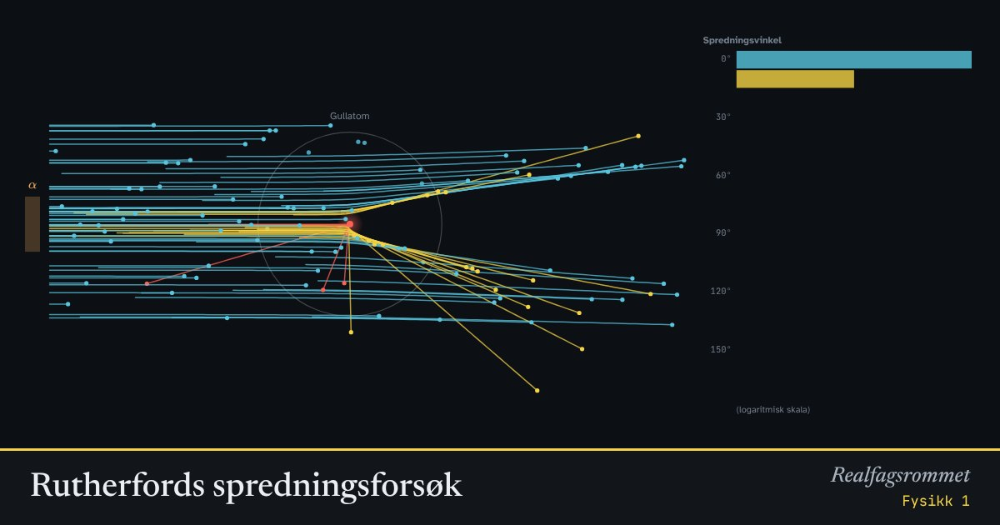

Rutherfords spredningsforsøk
Alfapartikler skytes mot et gullatom. Hvis den positive ladningen var smurt utover hele atomet, ville de knapt bøyd av. Noen få spretter tilbake. Det avslører en liten, tung kjerne.
Start animasjonen
Formler
Om animasjonen
I Thomsons modell er atomet en positiv «bolle» med elektroner som rosiner. Kreftene blir svake overalt, og alfapartiklene går nesten rett fram.
I Rutherfords modell er all den positive ladningen samlet i en kjerne som er om lag 100 000 ganger mindre enn atomet. Partikler som kommer nær den, får en enorm frastøtende kraft.
De fleste partiklene går rett gjennom. Det viser at atomet stort sett er tomrom. Histogrammet teller hvor mange som spres med ulike vinkler.
Kjernen er tegnet mye større enn i virkeligheten for at du skal se den.
Prøv dette
- Bytt mellom modellene. Hvilken observasjon i forsøket kan Thomsons modell ikke forklare?
- Hvordan endrer spredningen seg når energien øker? Forklar.
- Omtrent hvor stor andel spres mer enn 90° i Rutherfords modell?
- Hvilke svakheter har Rutherfords modell? Hva løste Bohr?
Kompetansemål
- Naturfag: Hypoteser, modeller og teorier som forklarer verden
- Fysikk 1: Atommodeller og observasjoner som støtter eller utfordrer dem